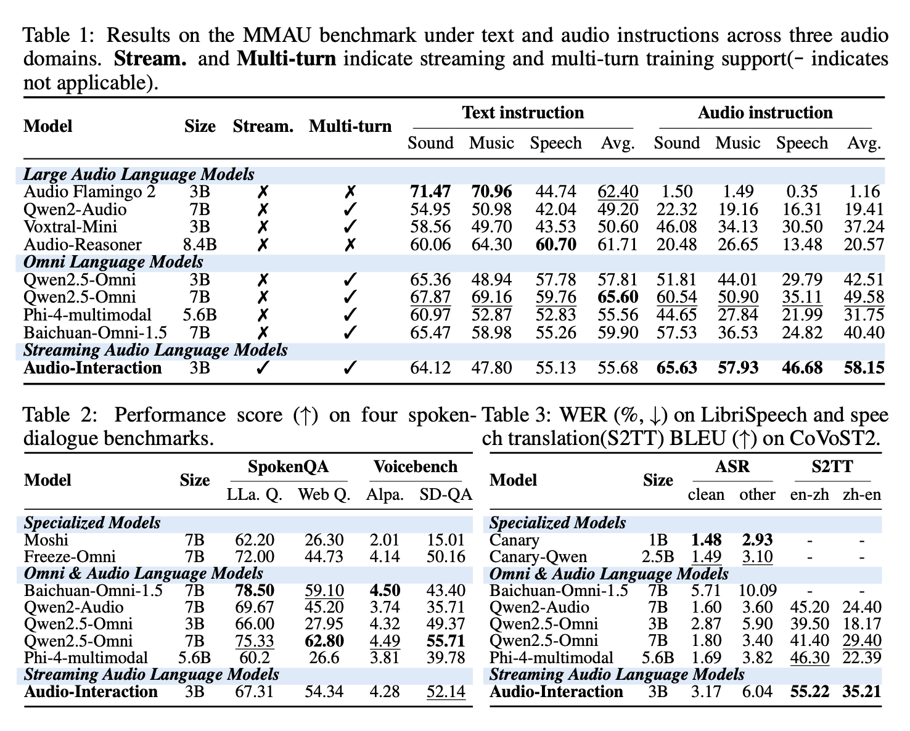
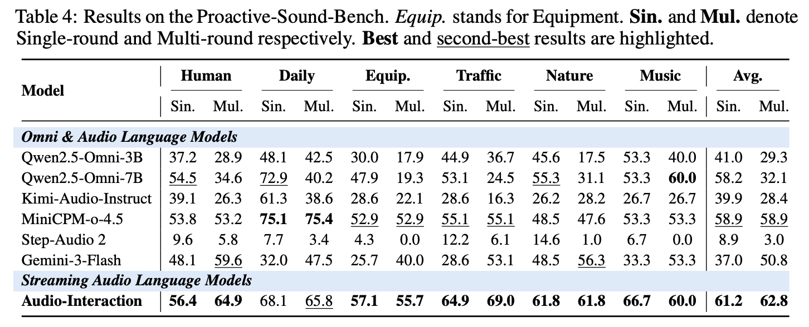

AudioInteraction: Towards Unified Audio Interaction Models
that Continuously Perceive, Decide and Respond
The next-generation audio-language model. A streaming brain for interaction.
1NTU 2NUS

Today’s Large Audio Language Models are stuck in an offline paradigm: you hand them a finished clip and wait for one reply. Streaming models exist, but each only handles a single, isolated task. We formalize the missing capability as a new concept, the Audio Interaction Model, and build the first one. AudioInteraction is a unified, always-on model that runs conventional offline tasks (ASR, S2TT), runs streaming tasks in real time, and achieves general streaming audio instruction following on a live stream, all inside a single all-in-one model that keeps listening and decides for itself when to speak.

Watch AudioInteraction listen, decide and speak, live
Native Streaming Audio Understanding
AudioInteraction is trained for native streaming audio understanding: every task stops being a separate model and becomes a single instruction inside one model. It goes further than instructions. With no prompt at all, it decides on its own when a moment is worth speaking to, and acts proactively.
| Clip | AudioInteraction[Ours] | gpt-audioby OpenAI | gemini-omniby Google |
|---|---|---|---|
| sample_count.wav Counting a repeating sound, live |
⟨Silence⟩ × 14|once!|⟨Silence⟩ × 4|twice!|⟨Silence⟩ × 4|three times!|⟨Silence⟩ × 4|four times!|⟨Silence⟩ × 4|five times!
|
❌ Record then infer Waits for the whole clip, then returns one summary. Never produces a running count as each event lands. |
⚠ Buffered window Buffers a fixed window first, so it lags behind the sound and cannot emit a live tally. |
| sample_music.wav A cough, then background music |
⟨Silence⟩ × 6|It sounds like you're coughing; please take care and drink some water.|⟨Silence⟩ × 29|The style of the music clip is likely jazz, characterized by its instrumental focus on improvisation and complex harmonies.
|
⚠ Ignores non-speech Treats the music as noise and stays silent on the cough unless it is explicitly asked. |
⚠ Cannot fuse events Can identify the music alone, but misses the cough and cannot connect the two events. |
SoundFlow: training models with an always-on perceive-decide-respond loop

The real world never pauses to hand over a finished clip, so an interaction model has to keep listening and decide for itself, instant by instant, whether this moment deserves a reply. That moves audio modeling from answering finished clips to running a continuous loop, and from a stack of single-task models to one model where recognition, translation and dialogue are all instructions inside the same always-on stream. SoundFlow covers the whole pipeline: stitching short clips into long interactions for data, chunk-level decision training with history review and comprehension-aware silence, and asynchronous FIFO inference that cuts first-frame latency by 4.5×.
StreamAudio-2M
A large-scale streaming instruction-following corpus
StreamAudio-2M covers seven core capabilities: audio understanding, real-time ASR, speech translation, voice chatting, proactive response, and environment-aware agent. It is built by collecting clips from real-world datasets (AudioSet, CommonVoice, CoVoST2, MOSS, and more), synthesizing text into speech with CosyVoice, then concatenating them into streaming sequences with environmental noise and token-level annotation.
Results
AudioInteraction keeps its foundational capabilities intact while becoming markedly stronger on speech-driven input, and it shows the strongest proactive intervention of every model we compare against.
Foundation
Basic ability preserved
Offline recognition and translation stay on par with strong baselines, so nothing is lost by going always-on.

Speech input
Markedly stronger
On speech-driven tasks the model is clearly stronger, tracking and responding to live speech as it arrives.

Proactive
Best-in-class intervention
The strongest proactive intervention of any model we test: it knows not just what to say, but when to say it.